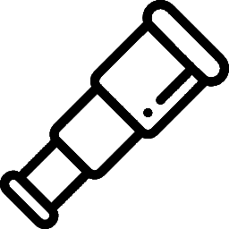

Subway Socioscope
About
Subway Socioscope provides an interactive visualization of Social Infrastructure Points of Interest (SIPOI) and key social and built environment characteristics within a 1-kilometer radius of subway stations globally. This tool aims to highlight the variations in social infrastructure around subway stations and to explore how car-centric infrastructure adversely affects the availability of SIPOI.
Read more about project Does Social Infrastructure Exist Near Subway Stations?
User Guide
Use  to select basemap and turn on/off layers;
to select basemap and turn on/off layers;
Use  and to search any place and nearby POIs
and to search any place and nearby POIs
Zoom in or click on cluster to view stations details
Use to save the map as a pdf file
Click on to get Social Infrastructure Point of Interest (SIPOI) near the selected station
Social Infrastructure Point of Interest (SIPOI) Within 1KM
Social and Built Environment Within 1KM
Population Information Not Available
Distance to City Center Information Not Available
Building Area Information Not Available
Parking Area Information Not Available
Road Length Information Not Available